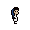
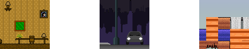
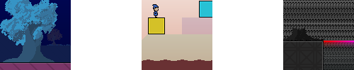

Levels by Spriteclad
« back to levels pageUnfinished
|  | Runaround |
Had this level in progress since 2015; hopefully going to actually finish it soon. A very short level about Juni waking up from a nightmare and trying to go on a walk to relieve some stress. (It doesn't go as she planned, however...)
Screenshots

Download
Here's a nearly-finished version because I doubt I'll finish it in the near future:
from MEGACancelled
One More |
I have been working on this level on and off since around 2010. It was basically just a bunch of random stuff and tilesets scattered around the level, since I never really decided on a theme. I ended up losing inspiration for it some time around 2015. It isn't very big. (Don't be surprised if you run into any void screens. Red key blocks are the borders of the level.)
Screenshots
